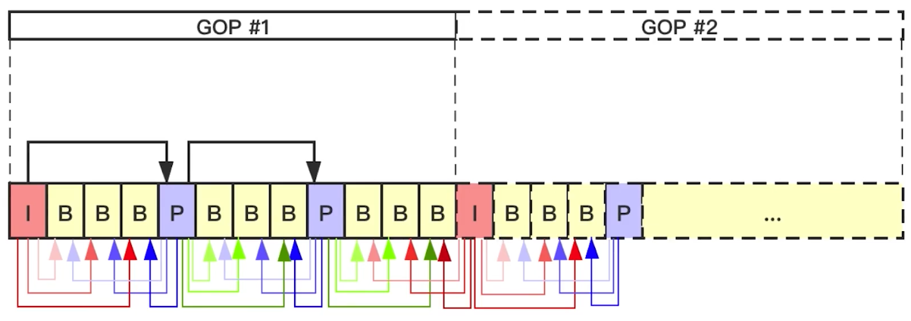

音视频
音频概念
人的听觉范围 20Hz~20KHz
采样率
1秒钟采集多少个数据
采样位数
每次采样的数据用多少位存储
声道数
有多少个声道，一般单声道或者左声道和右声道；每个声道的数据时不一样的，所以需要存储两份。
码率（比特率）
每秒钟传输的数据大小，码率 = 采样率 ∗ 采样位数 ∗ 声道数；
bps就是比特率。b就是比特（bit），s就是秒（second），p就是每（per），一个字节相当于8个bit位。
帧
没有明确概念，一般AAC帧大小为1024个采样点，MP3为1152个采样点； 就是一个压缩包的 sample 个数
音频基本名词
PTS DTS
PTS（Presentation Time Stamp）显示时间戳
DTS（Decoding Time Stamp）解码时间戳
对于音频来说，PTS == DTS
而对于视频来说，再有 B 帧的情况下，PTS 不一定等于 DTS
什么是 IPB 帧
I 帧：intra picture，帧内编码帧；可以独立解码，压缩时也是自己内部压缩，所以一般视频的第一帧就是 I 帧。压缩率较低。
P 帧：predictive-frame，前向预测编码帧；需要加上前一个 I 帧 或者 P 帧辅助才能解压，压缩率比 I 帧高，I帧的一半左右
B 帧：bi-directional interpolated prediction frame，双向预测内插编码帧；需要前一个 I 或者 P 帧及其后面的一个 P 帧才能解压，压缩率最高，I帧的四分之一帧
IDR帧属于I帧，遇到IDR帧解码器立即刷新，即清空buffer中的内容，每个GOP中的第一帧就是IDR帧。
SPS帧，PPS帧
当视频流B帧到来时，需要等待其 I 帧跟 后面的 P帧解压完才能解压，所以就需要 DTS 跟 PTS来识别，DTS表示可以解压了，解压后，插入到已解压的队列中，显示时根据 PTS 大小显示

示例
视频采集帧顺序：I B B P B B P
对应的PTS：1 2 3 4 5 6 7
编码顺序为：1 4 2 3 7 5 6 也就是 I P B B P B B
编码顺序对应的DTS：1 2 3 4 5 6 7
推流出去的顺序(等于编码顺序)：I P B B P B B
收的帧顺序：I P B B P B B
收的PTS顺序：1 4 2 3 7 5 6
收的DTS顺序：1 2 3 4 5 6 7
GOP（Group Of Picture，图像序列）
两个 I 帧之间形成一个 GOP
IDR（Instantaneous Decoding Refresh，即时解码刷新）
IDR帧会导致DPB（Decoded Picture Buffer）清空，在 IDR 帧之后的所有帧都不能引用任何 IDR 帧之前的帧的内容。播放器可以从一个IDR帧播放，具有随机访问的能力。一个 GOP 的第一个图像叫做 IDR 图像（立即刷新图像），IDR 图像都是 I 帧图像